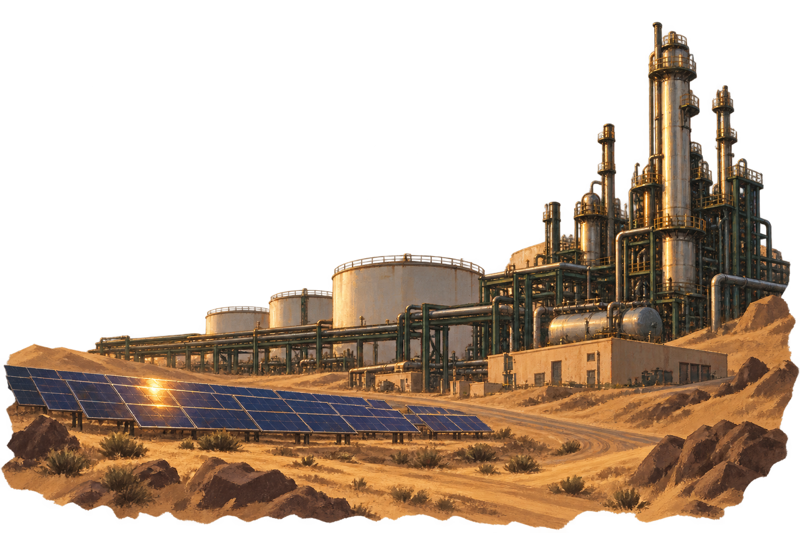

沙特阿拉伯
2030
愿景
PIF
公共投资基金
产业发展
就业
公共服务
年度账册
愿景
投资组合
战略
投资组合
金融
投资组合
产业布局
2026—2030
PIF

能源与建设
油气产业连接国家财政与外部市场，公共投资推动产业多元化。
ENERGY
基金总体
2024
管理资产
913
十亿美元
投资组合公司
225
家
已创立公司
103
家
×
年度账册
×
2024 年度账册
公共投资基金
管理资产
913
十亿美元
投资组合公司
225
家
已创立公司
103
家
管理资产同比增长
19
%
2017 年以来年均回报
7.2
%
投资组合覆盖国内产业发展与国际市场。基金同时承担经济转型与财务回报目标。
2024 年报 ↗